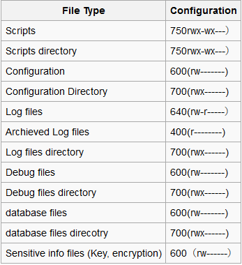

Summary
Impoper file permission configuration may result in privilledge escalation, information explousure, DLL injection, or unauthorized file access.
Therefore, files permission must be properly configured with minium access permission by default. The file permission needs to be configured include -
- Web files/directory
- Configuration files/directory
- Sensitive files (encrypted data, password, key)/directory
- Log files (security logs, operation logs, admin logs)/directory
- Executables (scripts, EXE, JAR, class, PHP, ASP)/directory
- Database files/directory
- Temp files /directory
- Upload files/directory
How to Test Review file Permission
Under the linux, use ls command to check the file permission. Alternatively, namei can also be used to recursively list the files permission.
$ namei -l /PathToCheck/
Generally, the files permission is suggested as below.

Tools